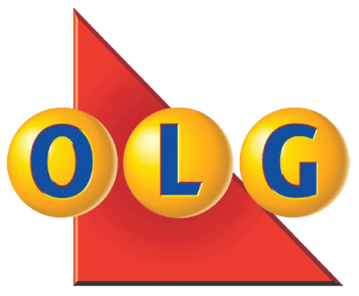

OVER TWO AND A HALF YEARS of combined experience in project management and business analysis with a focus on facilitating large-scale business transformation. Experience includes leading and controlling cross-functional program processes and initiatives and translating key performance indicators to elicit executive recommendations.
Education
The University of Waterloo
Bachelors of Arts,
Honours Economics,
Finance Specialization
Waterloo, ON
Sept 2008 - Apr 2013
Bachelors of Arts,
Honours Economics,
Finance Specialization
Waterloo, ON
Sept 2008 - Apr 2013
- Notable courses: Cost-Benefit Analysis (CBA), Econometrics, Mathematical Economics, Corporate Finance
- Extra-Curricular: VP Finance for UW Healthy Active Promotion Network, Marketing Manager for UW Capital Markets
- Certifications: Financial Modeling by The Analyst Exchange Program
Skills
Training
- Foundations of Project Management at The University of Toronto
- Financial Modeling by Analyst Exchange Program
Software
MS Project, Excel, Visio, PowerPoint, Word, SAP, OntTax, Think-cell, Lotus Notes, Gretl, SQL
Project Management Experience
Project Coordinator / Analyst
Ontario Lottery & Gaming Innovation Program (OLG) – Gaming Innovation Program
Toronto, ON | Jan 2014 - Present

Ontario Lottery & Gaming Innovation Program (OLG) – Gaming Innovation Program
Toronto, ON | Jan 2014 - Present
- Provided analytics to the Responsible Gambling team by evaluating spending data of self-excluded patrons to determine gambling patterns and construct a patron profile to best assist troubled players
- Analyzed key performance indicators (KPIs) such as net present value (NPV), return on investment (ROI), cost variances, estimate at completion (EAC) and milestone completion for the Strategic Vendor Procurement project (50M+)
- Conducted constraint analyses to resolve resource over-allocation, capacity issues and optimize usage
- Provided control to a portfolio of 37 projects by using best practices to analyze cost, schedule, scope and resources as well as lead quality assessments reviews (QARs)
- Collaborated with the Director and Advisor to establish governance processes for OLG's Modernization Program
- Aligned inter-departmental understanding by documenting requirements, creating role matrixes, redesigning process diagrams and organizational charts to develop an enhanced governance model
Property Analyst
City of Toronto – Real Estate Services
Toronto, ON | Apr 2011 - Sept 2013
City of Toronto – Real Estate Services
Toronto, ON | Apr 2011 - Sept 2013
- Implemented a municipal-wide strategy to revive and settle politically sensitive files and resolve outstanding accounts
- Conducted a business feasibility study of a high-profile site by analyzing appraisal data and forecasting revenue
- Developed and implemented a discounted cash flow process to reconcile and uncover operating cost variances, which lead to the successful identification of $220K in outstanding revenue
- Worked closely with the Toronto Transition Commission (TTC) to elicit stakeholder requirements and negotiate terms and conditions to develop multiple construction contracts for the Leslie Street Connection Track
Junior Risk Analyst
Ontario Ministry of Finance – Risk Assessment & Electronic Auditing
Pickering, ON | June 2010 - Aug 2010
Ontario Ministry of Finance – Risk Assessment & Electronic Auditing
Pickering, ON | June 2010 - Aug 2010
- Implemented a confidential tax mitigation initiative in preparation for the harmonization of sales tax (HST)
- Designed an effective risk mitigation process that incorporates cross referencing of reported financial tax metrics
- Analyzed key risk metrics of business vendors resulting in the successful identification of $200K in tax evasion